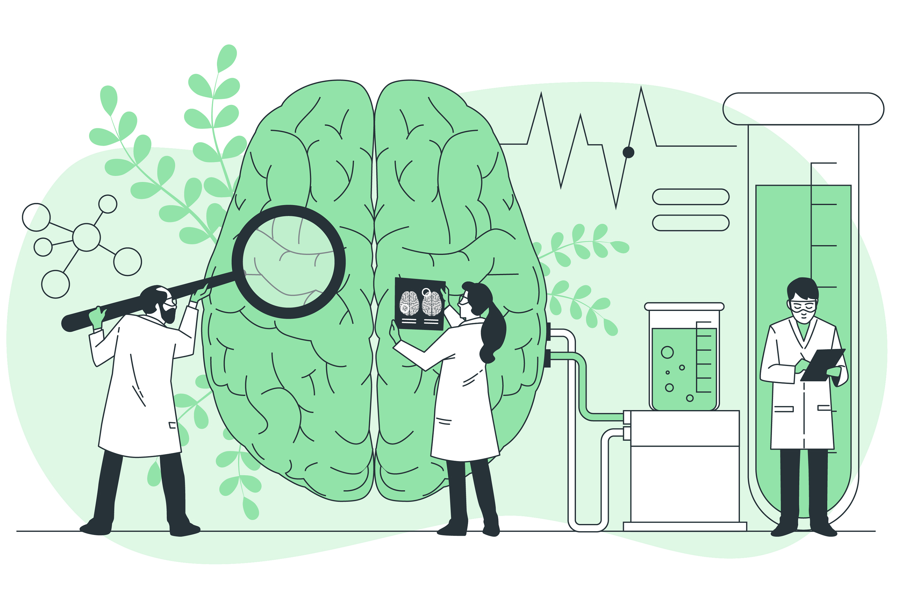

O Nosso atendimento psicológico é para todos que percebem em si
algum sofrimento emocional. Juntos, trilhamos o caminho da fala,
da escuta, dos pensamentos e damos espaço para suas inquietações.
Nosso trabalho surge a partir do que você tem a trazer, seja com
uma questão ou sentimentos que lhe incomodam.
Nossos Psicólogos são especialistas em paciente adulto crítico pelo programa de residência multiprofissional do HCPA.
Atendimento à adolescentes, adultos e idosos.
Mais praticidade e flexibilidade com o atendimento de forma online em todo Brasil.
Não atendemos convênio.